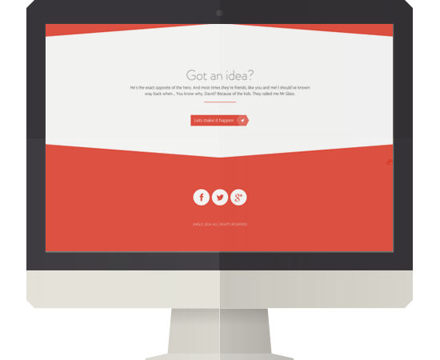
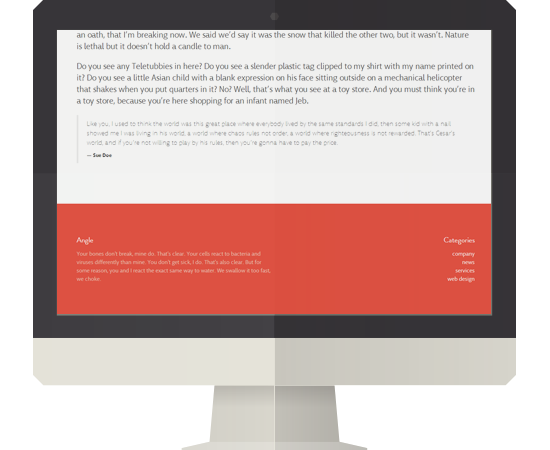
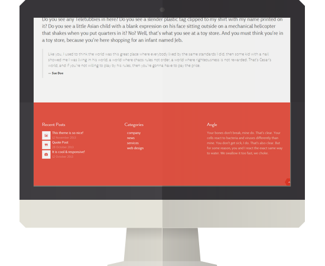
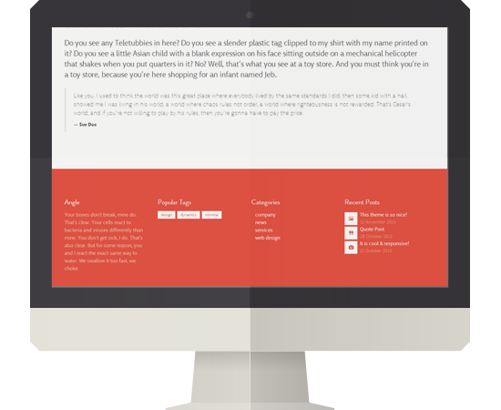
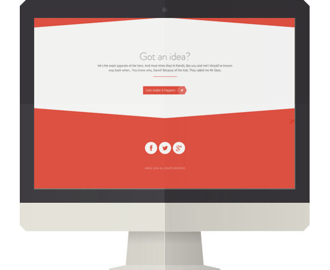
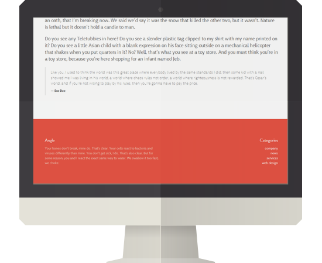
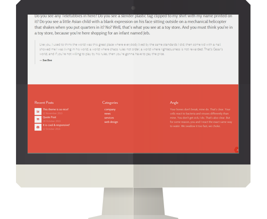
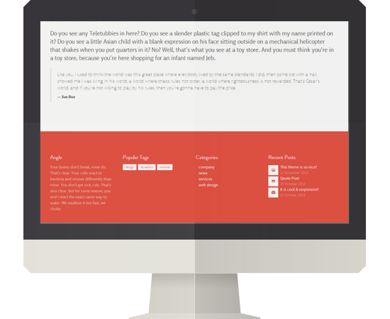

Footer Options
Angle supports up to four columns so that you can customise your footer as you like

One column

Two columns

Three columns

Angle supports up to four columns so that you can customise your footer as you like



